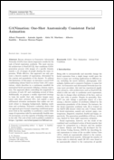
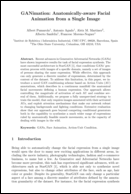

GANimation: Anatomically-aware Facial Animation from a Single Image

We introduce a novel GAN conditioning scheme based on Action Units (AU) annotations, which describe in a continuous manifold the anatomical facial movements defining a human expression. Our approach permits controlling the magnitude of activation of each AU and combine several of them.

The proposed architecture consists of two main modules. On the one hand, a generator $G(\mathbf{I}_{\mathbf{y}_r}|\mathbf{y}_g)$ is trained to realistically transform the facial expression in image $\mathbf{I}_{\mathbf{y}_r}$ to the desired $\mathbf{y}_g$. On the other hand, we use a critic $D(\mathbf{I}_{\mathbf{y}_g})$ to evaluate the quality of the generated image as well as its expression. Note that $G$ is applied twice, first to map the input image $\mathbf{I}_{\mathbf{y}_r}\rightarrow \mathbf{I}_{\mathbf{y}_g}$, and then to render it back $\mathbf{I}_{\mathbf{y}_g}\rightarrow \hat{\mathbf{I}}_{\mathbf{y}_r}$.

One key ingredient of our system is to make $G$ focus only on those regions of the image that are responsible of synthesizing the novel expression and keep the rest elements of the image such as hair, glasses, hats or jewelery untouched. Concretely, instead of regressing a full image, our generator outputs two masks, a color mask $\mathbf{C}$ and attention mask $\mathbf{A}$. The attention is learned in an unsupervised manner.

Examples of expression animation in a continuous domain. In these examples, we are given solely the left-most input image $\mathbf{I}_{\mathbf{y}_r}$ (highlighted by a green square), and the parameter $\alpha$ controls the degree of activation of the target action units involved in a smiling-like expression. Additionally, our system can handle images with unnatural illumination conditions, such as the example in the bottom row.
News and Tech Websites
BibTex
@article{Pumarola_ijcv2019,
title={GANimation: One-Shot Anatomically Consistent Facial Animation},
author={A. Pumarola and A. Agudo and A.M. Martinez and A. Sanfeliu and F. Moreno-Noguer},
booktitle={International Journal of Computer Vision (IJCV)},
year={2019}
}
Publications
-

- GANimation: One-Shot Anatomically Consistent Facial Animation
- A. Pumarola, A. Agudo, A. M. Martinez, A. Sanfeliu and F. Moreno-Noguer
- International Journal of Computer Vision (IJCV), 2019.
-
@article{Pumarola_ijcv2019,
title = {GANimation: One-Shot Anatomically Consistent Facial Animation},
author = {A. Pumarola and A. Agudo and A.M. Martinez and A. Sanfeliu and F. Moreno-Noguer},
booktitle = {International Journal of Computer Vision (IJCV)},
year = {2019}
}
-

- GANimation: Anatomically-aware Facial Animation from a Single Image
- A. Pumarola, A. Agudo, A. M. Martinez, A. Sanfeliu and F. Moreno-Noguer
- European Conference on Computer Vision (ECCV), 2018.
- [Best Paper Award Honorable Mention]
-
@inproceedings{pumarola2018ganimation,
title={GANimation: Anatomically-aware Facial Animation from a Single Image},
author={A. Pumarola and A. Agudo and A.M. Martinez and A. Sanfeliu and F. Moreno-Noguer},
booktitle={Proceedings of the European Conference on Computer Vision (ECCV)},
year={2018}
}
Acknowledgments
This work is partially supported by the Spanish Ministry of Economy and Competitiveness under projects HuMoUR TIN2017-90086-R, ColRobTransp DPI2016-78957 and Mar\'ia de Maeztu Seal of Excellence MDM-2016-0656; by the EU project AEROARMS ICT-2014-1-644271; and by the Grant R01-DC- 014498 of the National Institute of Health. We also thank Nvidia for hardware donation under the GPU Grant Program.